@experiment struct PathMNIST
"Luximm variant: selects both the architecture and the pretrained checkpoint."
variant::GraphConst{Symbol} = :convnextv2_tiny_fcmae_ft_in22k_in1k
"PathMNIST tissue classes."
num_classes::GraphConst{Int} = 9
"Per-channel mean the pretrained weights expect (ImageNet)."
pixel_mean::GraphConst{NTuple{3, Float32}} = (0.485f0, 0.456f0, 0.406f0)
"Per-channel standard deviation the pretrained weights expect (ImageNet)."
pixel_std::GraphConst{NTuple{3, Float32}} = (0.229f0, 0.224f0, 0.225f0)
"Augmented ODE state dimensions, predicted from the pooled features; the state also
carries one logit dimension per class, starting at zero."
aug_dims::GraphConst{Int} = 32
"Hidden width of the ODE vector field (encoder, tanh, decoder)."
node_hidden::GraphConst{Int} = 256
"RK4 steps over t in [0, 1]."
node_steps::GraphConst{Int} = 100
"Weight of the kinetic-energy penalty on the ODE's trajectory (Finlay et al., 2020).
Off by default; a traced input, so turning it on or scheduling it recompiles nothing."
kinetic_weight::Device{Float32} = 0.0f0
"Where the archive comes from on first use (MedMNIST+ on Zenodo)."
data_url::String = "https://zenodo.org/records/10519652/files/pathmnist_224.npz?download=1"
"Directory for the converted, memory-mapped .u8 files, relative to the working directory."
data_dir::String = joinpath("data", "pathmnist_224")
"Seeds the shuffle; Nitro also reads it as the run seed."
seed::Int = 0
"Per-step batch: fits a 12 GB consumer GPU."
batch_size::Int = 16
"Gradient accumulation steps (read by Nitro by name): an effective batch of 32."
accum::Int = 2
max_epochs::Int = 5
"Peak learning rate of the one-cycle schedule (RAdam)."
max_lr::Float64 = 1.0e-3
"Learning rate of the NeuralODE vector field relative to the rest of the model."
node_lr_ratio::Float64 = 1.0
"Fraction of the run spent warming up to max_lr."
pct_start::Float64 = 0.3
"Decoupled weight decay; the NeuralODE vector field is not decayed."
weight_decay::Float64 = 1.0e-4
"Augmentation: random 90° rotations (k = 0:3)."
aug_rot90::Bool = true
"Augmentation: random mirror. With aug_rot90, covers all 8 orientations."
aug_flip::Bool = true
endReplacing PyTorch with Julia and Reactant: One Year In
julia
reactant
machine-learning
A year after replacing PyTorch with Julia for my ML work, a look at the tools I built on Reactant to train, export and serve models, walked through end to end on a real pathology dataset.
Nearly a year ago, I decided to give the Julia programming language a shot; not even for machine learning work initially, but as a way to speed up a production service which was CPU bound. Now I know many people are thinking “Julia has correctness issues” and “dynamic typing in mah prod”. In my experience the first is overstated; the second is a real trade-off, and one I’ve chosen to make, because the sort of things I value when deploying services and models for scientific computing are different than the sorts of things many other engineers do.
These were the parts of the language that sold me:
- A REPL workflow with Revise.jl, where edits to code take effect in the running session without a restart
- Julia code can be differentiated and optimized as it is written, without rewriting it in a framework’s DSL. I reuse part of an ODE dynamics function, built on a cubic spline from DataInterpolations.jl, as is inside a NonlinearSolve problem, and optimize over it with the same code
- A modern runtime in the spirit of Go: garbage collection, plus tasks and channels for concurrency
- Multiple dispatch, which lets separately written packages work together and lets you add specializations to other people’s functions, making them faster or better integrated with your code, without opening a pull request. With agents producing more code to review than ever, I think this is a big advantage for Julia
- Fast code that stays generic and readable
- SciML, a mature ecosystem for differential equations, nonlinear solvers and sensitivity analysis
This post is about my journey, mostly focusing on the ML aspect, but also delving into my journey through the “production” side of things.
Frustration with PyTorch
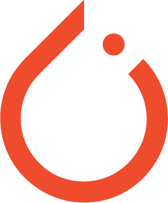
We greatly accelerated our main backend service by rewriting all of the performance sensitive code in Julia. After tasting the initial success I thought to myself maybe we can do something similar with our ML stack? While PyTorch is an absolutely incredible piece of software, there were a couple of pain points that made me feel like my use case wasn’t something that was going to get much support going forward:
- torchscript deprecation: We had come to rely on torchscript as a flexible way to deploy models. Data dependent branching and flow control were both possible, which was nice for adding postprocessing to an already trained model. It always felt much easier to just compile our models with the extra logic built in rather than try to use whatever clunky solution our serving platform offered; we loved the convenience that torchscript provided. Having triple digits worth of models tied up in a format that had received basically no support for over five years also meant we had to make a change going forward.
- General-purpose model servers were slow to move to
torch.export: NVIDIA Triton Server only got non-beta support for torch.export ~3 years after torch.export was introduced, and TorchServe, PyTorch’s own server, was archived without ever supporting it natively. torch.compilewas underwhelming for a long time: most of the performance gains seemed locked to a specific GPU model, and for several years I measured close to 0% improvement on everything I threw at it, even withfullgraph=Trueguaranteeing there were no graph breaks. Many of the problems with torch.compile have since been fixed, but I was living with the same eager mode performance limitations I had been living with since I first started using PyTorch.
Together, these made me want a deployment format I could count on for years and a compiler that sped up the models I was actually training. We had already adopted Julia for our backend and were building on it extensively, so the natural next step was to see whether it could handle our ML work as well.
One year ago: the Julia ML ecosystem
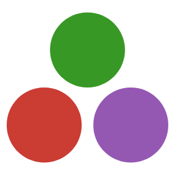
While I initially found a robust array of packages for scientific computing, I could immediately tell fewer people were doing “PyTorch” style ML for lack of a better term. In medical imaging it’s still quite common to use CNNs as backbones are not the ceiling on most problems, believe it or not. So I surveyed the ecosystem and here is what I found:
- Lux.jl/Flux.jl/Zygote.jl/CUDA.jl exist and seem to be the most comparable to what I get working with PyTorch.
- There didn’t seem to be an equivalent to timm where you can just load up whatever pretrained backbone you want either.
- People were talking about something called Reactant, but I didn’t really understand what it was or why I needed it
The core proposition of Zygote seems compelling: automatic differentiation at the language level, through almost any Julia code you write. But for PyTorch-style training workloads, its speed and device memory usage weren’t competitive with PyTorch eager mode, so I decided to give Reactant a shot; there was a lot of talk around Reactant.jl and Enzyme being the next step forward for ML in Julia.
Reactant and Enzyme: compiling and differentiating Julia
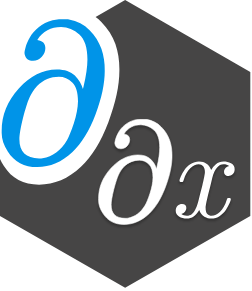
Reactant compiles Julia code into an MLIR program, Enzyme differentiates that program at the compiler level (Moses and Churavy 2020), and XLA turns the result into fused CPU/GPU/TPU kernels. StableHLO is a dialect of MLIR used by XLA, and it has a number of benefits such as promising five years of backwards compatibility. If we can compile our models to StableHLO, that means that we should have a relatively stable platform for model training and serving going forward, so I took the dive into Reactant.
With Reactant, I don’t write backward passes for custom layers. Reactant traces Julia code into a small set of StableHLO operations, Enzyme’s optimization passes simplify that program, and Enzyme differentiates the optimized program, so the gradient gets the same simplifications as the forward pass. In PyTorch, a layer built from loops and indexing is often slow under autograd, and making it fast can mean writing a custom autograd.Function with its own backward. Now when I write a new layer, I only need to consider the forward pass, and Enzyme takes care of the backward pass without giving up performance.
To be fair, none of this is exclusive to Julia. JAX users can run a function through Enzyme-JAX’s optimization pipeline with the enzyme-ad package’s enzyme_jax_ir decorator, and the same package lets JAX differentiate external C++ code. Enzyme itself works on LLVM IR, so it can differentiate code from languages that compile to LLVM: C and C++ through Clang, and Rust and Fortran through their own bindings. What Reactant adds is the frontend: it traces ordinary Julia code, so an existing Julia package can become input to these compilers by being made traceable rather than rewritten against a framework’s array API.
NoteBringing in existing StableHLO
Reactant can also call StableHLO that was produced somewhere else. Reactant.Ops.hlo_call takes a StableHLO module as text, for example one exported from PyTorch with torch_xla or from JAX, and inserts it into the traced program. It becomes part of the same program, so it is optimized together with the surrounding Julia code, and Enzyme can differentiate through it. I use this all the time to bring in PyTorch models I haven’t ported to Julia yet.
Betting on Reactant
The next two weeks of my life were a living hell. I had no idea what I was doing with Reactant, constantly hitting tracing errors, going OoM, dealing with hour long compile times. But I persevered and kept learning from my mistakes; I had a particularly difficult problem which I needed to iterate on, but I just couldn’t get PyTorch to speed it up. I was working on a problem that combined a large backbone with a NeuralODE and was using torchdiffeq. The model took nearly a week to converge across 4x NVIDIA A6000 (Ampere). I kept going, convinced that the optimizations provided by XLA would prove decisive for the NeuralODE part.
Then the eureka moment came: effectively a 10x speedup over what I was seeing with PyTorch eager. All that time I had spent learning the basics of Reactant had paid off, and now I was in a position to quickly iterate on the model and solved the problem later that week. For the sake of transparency, it’s worth noting that I have since revisited a similar workload with torch.compile, and got much more comparable numbers with Reactant still holding the lead, but not an “order of magnitude”. Regardless, I was sold: it was time to build a full training and serving stack on top of Reactant.
What I built
ReactantNitro.jl
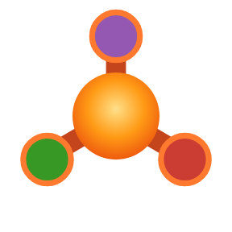
ReactantNitro.jl is an ML framework with a training loop designed around making Reactant easier to work with and avoiding unnecessary compiling. It has a REPL + Revise.jl first workflow: you can hot reload your data processing code, sweep hyperparameters, etc. without restarting your REPL or re-compiling.
Why another framework, you say? There are two main reasons. The first is that a compiler like Reactant warrants its own framework, one that handles the pitfalls I ran into before I created ReactantNitro: datasets ending up in the trace and slowing compiles, programs recompiling when nothing they depend on has changed, stale programs after a code edit, device transfers at unexpected times, and device memory building up across batches.
The second is a training workflow built around Revise. In October 2025 I wrote on Hacker News that waiting 15+ seconds to test small changes to my PyTorch training code was rather annoying, and that “sometimes I wish we could have a training workflow similar to how Revise works.” That is how I train now. I keep one Julia session open, edit the model, loss or data pipeline in my editor, and Revise patches the change into the running session. The next run picks it up without restarting Julia or reloading packages, and Nitro recompiles only the programs the edit reaches. The @experiment declaration makes this possible by stating which settings shape the compiled program and which can change freely. Each stage of the workflow, from setting up an experiment through training, validation, evaluation, prediction and export, is a function call at the REPL, and a Ctrl-C stops a run cleanly and hands the session back. It turns out that an interface designed for a REPL is only a few steps away from one an agent can use over MCP, so Nitro’s MCP tools, covered in Working with agents, call the same entry points.
ReactantServer.jl
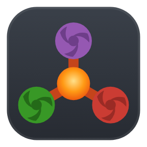
ReactantServer grew out of one question: can we serve more models than their weights can fit on the GPU by hot swapping them in real time? That solved a real problem for us. We have a lot of models that are called infrequently, and together they were close to no longer fitting on our pod. Beyond that, it’s a general serving platform for StableHLO.
ReactantServer.jl uses Reactant’s PJRT interface to serve StableHLO produced by Reactant.@compile using the KServe V2 protocol. It allows you to express arbitrary pre and post processing in pure Julia without having to set up a Python environment or compile any stubs, and supports hot swapping more models than you can fit in memory at PCIe speed (typically between 10-100 ms for most CNN vision models).
Stepping stones
Neither of these got built overnight. Three smaller projects came first, and ReactantNitro and ReactantServer both depend on them.
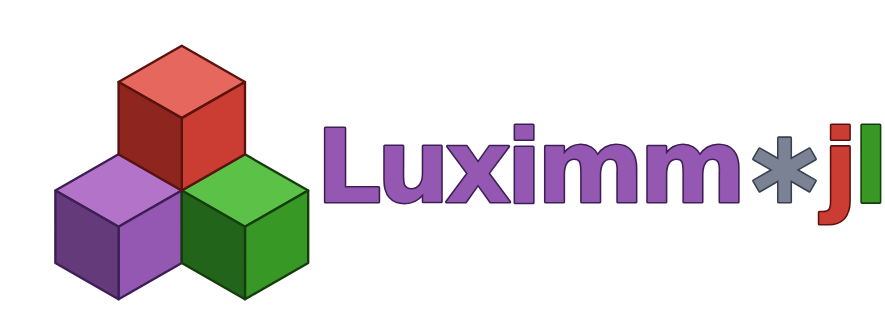
Luximm.jl does for Lux.jl what timm does for PyTorch. It ports timm’s image backbones to Lux and loads their pretrained weights directly from Hugging Face Hub. It covers ResNet, SE-ResNet, BiT ResNetV2, ConvNeXt, ConvNeXt V2, VGG, ViT and CoAtNet, and parity tests check each port against the PyTorch original. The ConvNeXt V2 backbone in the walkthrough below comes from Luximm.
gRPCClient.jl and gRPCServer.jl give Julia a native gRPC stack, which ReactantServer uses to speak KServe V2. I rewrote gRPCClient.jl on top of libcurl’s HTTP/2 support. Sébastien Celles and I wrote gRPCServer.jl.
Reactant.jl end-to-end: Training, exporting, and serving a PathMNIST CNN and NeuralODE classifier with ReactantNitro and ReactantServer
What would a good blog post be without actually showing how you can train and serve your own models end-to-end with the Reactant stack? Yes, it’s a real thing, you can do it today if you want. All of the code is in the companion repo, so you can follow along or run it yourself. Since we are dealing with Julia, there must be a reason to add a NeuralODE somewhere. Honestly, I don’t need one: I still find these models fascinating, especially the functions and representations they learn. Let’s start with how the full stack fits together.
The problem: PathMNIST
We are pointing the stack at the PathMNIST dataset rather than something completely trivial like MNIST. The model learns to predict between 9 tissue classes over a set of 224x224 images; this is distantly related to the sorts of problems I deal with at work, but basically none of those sorts of problems have had anything close to an “ImageNet” moment where a high quality dataset is publicly available. So hopefully this is a bit more interesting than a pure “toy” dataset. Open to suggestions here!
Setting up the environment
juliaup add 1.13.1
git clone https://github.com/csvance/PathMNISTReactant.jl
cd PathMNISTReactant.jl
julia +1.13.1 --project=.using Pkg
Pkg.instantiate()ReactantNitro.jl: Declaring the @experiment
ReactantNitro uses a small experiment macro to ensure things are wired up correctly and Reactant’s tracer doesn’t trace over things it shouldn’t, which can be a source of slow compiles. We declare an @experiment for PathMNIST. All of ReactantNitro’s hooks dispatch on this type.
Each field’s type says how it reaches the compiled program. A GraphConst field is baked into the program as a constant, so changing it recompiles; it is for values that change the graph, such as the number of classes or a layer width. A Device field is passed to the program as a traced input, so it can be swept or scheduled without recompiling; kinetic_weight is one. Unmarked fields stay on the host and never reach the compiled program, which covers everything else, such as the data paths, the batch size and the learning rate.
NoteThe full
@experiment
The model
We create a CNN backbone (provided by Luximm.jl) that maps an image to a pooled feature vector. After a LayerNorm, a linear layer projects that vector into the first 32 dimensions of the NeuralODE’s state; the other nine, one per class, always start at zero. The state then evolves over 100 steps of RK4 integration, and the nine class dimensions at the end are the logits. There is no classifier layer after the ODE, so every prediction starts out uniform and only the flow can carry it to a class, an idea that builds on augmented NeuralODEs (Chen et al. 2018; Dupont et al. 2019).
Because the logits are part of the ODE’s state, the prediction can be read at any point along the trajectory: \(p(t) = \operatorname{softmax}(z(t))\). Here is what the trained model does with 256 test tiles. A helper script in the companion repo compiles one extra program that records \(p(t)\) every two RK4 steps, then draws the flow. It places the nine classes on the corners of a regular nonagon and plots each test tile at \(\sum_k p_k(t)\,\mathrm{corner}_k\). Every trajectory starts at the center, the uniform prediction at \(t = 0\), and the flow carries it out to a class:
Press play or drag the slider to move through the integration. Tap a class to isolate its tiles, or a tile to see all nine of its probabilities at the current t.
Note
rk4 and node_head: RK4 integration and the NeuralODE head
# Fixed-step RK4 over t in [0, 1]. Also returns each sample's kinetic energy,
# ∫|f(u)|² dt, from the four stage evaluations.
function rk4(f, u, steps::Integer)
T = eltype(u)
dt = one(T) / T(steps)
half, sixth = dt / T(2), dt / T(6)
sq(k) = sum(abs2, k; dims = 1)
energy = zero(sq(u))
for _ in 1:steps
k1 = f(u)
k2 = f(u .+ half .* k1)
k3 = f(u .+ half .* k2)
k4 = f(u .+ dt .* k3)
u = u .+ sixth .* (k1 .+ T(2) .* k2 .+ T(2) .* k3 .+ k4)
energy = energy .+ sixth .* (sq(k1) .+ T(2) .* sq(k2) .+ T(2) .* sq(k3) .+ sq(k4))
end
return (; u, energy)
end
# Augmented NeuralODE head. The state is [a; z]: `a` comes from the pooled
# features, and `z` starts at zero and ends as the logits.
function node_head(e::PathMNIST, width::Integer)
# captured, not passed to @compact (they would land in st)
steps, A, K = e.node_steps, e.aug_dims, e.num_classes
D = A + K
return @compact(
proj = Dense(width => A),
enc = Dense(D => e.node_hidden, tanh),
dec = Dense(e.node_hidden => D; init_weight = zeros32, init_bias = zeros32),
) do pooled # (width, N)
a0 = proj(pooled)
u0 = vcat(a0, zeros(eltype(a0), K) .* a0[1:1, :]) # z(0) = 0
(; u, energy) = rk4(u -> dec(enc(u)), u0, steps)
motion = sqrt.(sum(abs2, u .- u0; dims = 1) ./ sum(abs2, u0; dims = 1))
@return (; logits = u[(A + 1):D, :], energy, motion)
end
end
Note
build_model: the backbone, the head, and pretrained weights
function ReactantNitro.build_model(e::PathMNIST, rng)
# num_classes = 0 drops the ImageNet classifier and returns the last
# feature map. prefix = (:backbone,) points the weight loader at the
# @compact slot of the same name.
backbone, load_backbone = create_pretrained(e.variant; num_classes = 0, prefix = (:backbone,))
width = last(feature_info(e.variant).channels) # 768 for Tiny
# Captured by the closure rather than passed to @compact, which would
# make them trainable parameters.
μ = reshape(collect(e.pixel_mean), 1, 1, 3, 1)
σ = reshape(collect(e.pixel_std), 1, 1, 3, 1)
model = @compact(
backbone = backbone,
norm = LayerNorm((width,)),
head = node_head(e, width),
) do x # (W, H, 3, N) UInt8, as stored on disk
x = to_float32(x) # UInt8 to [0, 1] on device: 4x less to transfer
x = (x .- μ) ./ σ
feats = backbone(x) # (W/32, H/32, width, N)
pooled = dropdims(mean(feats; dims = (1, 2)); dims = (1, 2))
@return head(norm(pooled)) # (num_classes, N) logits
end
ps, st = Lux.setup(rng, model)
# Load here, not later: Nitro snapshots the weights build_model returns
# as the initial point (w0).
ps, st = load_backbone(ps, st)
return model, ps, st
endThe data pipeline
Only the training split is augmented. Validation and test tiles go through exactly as they are stored, so every evaluation, and every request to the served model later on, sees the same pixels.
NoteAugmentations
| Augmentation | Range / distribution | Justification |
|---|---|---|
Rotation by multiples of 90° (aug_rot90) |
\(k \in \{0, 1, 2, 3\}\), uniform | Tissue has no canonical orientation; an index permutation, so no interpolation and essentially free |
Mirror (aug_flip) |
\(\mathrm{Bernoulli}(0.5)\) | With rotation, covers all 8 symmetries of the square uniformly; also an index permutation |
NoteHow Nitro drives the loader: PyTorch
DataLoader vs ReactantNitro
ReactantNitro supports parallel dataloaders, but there are some key differences from how that works in PyTorch.
PyTorch DataLoader |
ReactantNitro + MLUtils DataLoader |
|
|---|---|---|
| Unit of parallelism | Worker processes (num_workers) |
Tasks on the default thread pool, inside the training process |
| Dataset in workers | A copy per worker process | One object, one memory map, shared |
| Batch hand-off | Tensors in shared memory, handles through queues | Same address space; batches passed directly |
| Throughput knob | num_workers |
julia -t N,1 (N tasks) |
| Read-ahead | prefetch_factor batches per worker (default 2) |
host_batches = 2 × N on the host, device_batches = 1 on the device |
| Host to device | Your loop: pin_memory, .to(device, non_blocking=True) |
One transfer task, only the fields the hooks declare |
| Worker lifetime | Restarted each epoch unless persistent_workers=True |
Tasks, cheap to start every epoch |
| Short final batch | drop_last, one setting for the loader |
Train must drop it (fixed program shape); eval keeps it, padded by Nitro |
| Memory management | Per-process; workers never pause the training process | Shared GC; data-path allocation can pause training |
Training with ReactantNitro
The remaining hooks are forward, loss and train_metrics. forward is the program Nitro compiles for both training and inference, and loss is the scalar Enzyme differentiates: cross-entropy, plus the kinetic-energy penalty of Finlay et al. (2020) when kinetic_weight is turned up. train_metrics runs inside the gradient program, so the dynamics are logged every step at no extra cost.
Note
forward, loss and train_metrics: the training hooks
ReactantNitro.forward(e::PathMNIST, model, ps, st; img) = Lux.apply(model, img, ps, st)
function cross_entropy(e::PathMNIST, logits, label)
onehot = reshape(1:e.num_classes, :, 1) .== reshape(label, 1, :)
return -mean(sum(onehot .* logsoftmax(logits; dims = 1); dims = 1))
end
ReactantNitro.loss(e::PathMNIST, out; label) =
cross_entropy(e, out.logits, label) + e.kinetic_weight * mean(out.energy)
ReactantNitro.train_metrics(e::PathMNIST, out) =
(; kinetic = mean(out.energy), motion = mean(out.motion))metrics runs on the host after each validation batch. Each entry is value => mode: value => n is added up over the split and divided once by the summed n, and value => :sum is only summed, which is how the confusion matrix and the calibration bins travel. A mode can cover a whole group of values, so the three calibration sums travel together under one name. finalize_metrics turns them into the numbers that matter once per epoch: macro accuracy (the mean of per-class recall, the main metric here, since the test set’s classes are not balanced), plain accuracy, the expected calibration error over 15 confidence bins, and the mean motion and kinetic energy of the ODE, so validation also shows whether the dynamics are doing anything.
Note
metrics and finalize_metrics: macro accuracy, ECE, and the ODE’s motion
const ECE_BINS = 15 # confidence bins for the expected calibration error
function ReactantNitro.metrics(e::PathMNIST, out; label)
n = length(label)
probs = softmax(out.logits; dims = 1)
confusion = zeros(Int, e.num_classes, e.num_classes) # rows true, columns predicted
samples, conf, correct = zeros(ECE_BINS), zeros(ECE_BINS), zeros(ECE_BINS)
for (p, l) in zip(eachcol(probs), label)
c, pred = findmax(p)
confusion[l, pred] += 1
b = clamp(ceil(Int, c * ECE_BINS), 1, ECE_BINS)
samples[b] += 1
conf[b] += c
correct[b] += pred == l
end
return (;
val_loss = cross_entropy(e, out.logits, label) * n => n,
confusion = confusion => :sum,
calib = (; samples, conf, correct) => :sum,
kinetic = sum(out.energy) => n,
motion = sum(out.motion) => n,
)
end
function ReactantNitro.finalize_metrics(e::PathMNIST, acc, split)
c = acc.confusion
recall = [c[k, k] / sum(c[k, :]) for k in axes(c, 1) if sum(c[k, :]) > 0]
(; samples, conf, correct) = acc.calib
return (;
acc.val_loss,
macro_acc = sum(recall) / length(recall), # mean per-class recall
acc = sum(c[k, k] for k in axes(c, 1)) / sum(c),
ece = sum(abs.(conf .- correct)) / sum(samples),
acc.motion,
acc.kinetic,
)
end
NoteThe optimizer and learning-rate schedule
The optimizer is RAdam, Nitro’s default rule, with decoupled weight decay of \(10^{-4}\) on the weights, except the NeuralODE’s vector field, which gets its own parameter group with no decay, since decay would keep pulling the dynamics back toward zero. Biases and normalization scales and shifts are never decayed: a no_decay rule excludes every parameter with at most one dimension larger than 1, which covers them however many singleton dimensions Lux stores them with. The learning rate follows a one-cycle schedule (Smith and Topin 2019) from ParameterSchedulers.jl, peaking at \(10^{-3}\) at 30% of the run. A schedule key binds to an optimizer rule field, here eta, the learning rate, or to a Device field of the experiment, so kinetic_weight could be scheduled the same way without a recompile. None of these values are part of the compiled program, so changing them does not trigger a recompile. The checkpointer keeps the epochs with the best validation macro accuracy.
using ParameterSchedulers: OneCycle
ReactantNitro.param_group(::PathMNIST, ks) = (:enc in ks || :dec in ks) ? :node : :default
ReactantNitro.learning_rate(e::PathMNIST) = Float32(e.max_lr)
ReactantNitro.learning_rate(e::PathMNIST, ::Val{:node}) = Float32(e.max_lr * e.node_lr_ratio)
ReactantNitro.lambda(e::PathMNIST) = Float32(e.weight_decay)
ReactantNitro.lambda(::PathMNIST, ::Val{:node}) = 0.0f0
# No decay on biases or norm scales and shifts: any leaf with at most one
# dimension larger than 1, whatever singleton dimensions Lux gives it
ReactantNitro.no_decay(::PathMNIST, ks, x) = count(>(1), size(x)) <= 1
ReactantNitro.schedules(e::PathMNIST) = (;
eta = total -> OneCycle(
total, Float32(e.max_lr); percent_start = e.pct_start,
startval = Float32(e.max_lr / 25), endval = Float32(e.max_lr / 25 / 1.0e4)
),
)
ReactantNitro.checkpointer(::PathMNIST) = TopKCheckpointer(; metric = :macro_acc, mode = :max)The batch fields (img, label) are keyword arguments, so each hook declares exactly what it reads, and Nitro only transfers those fields to the device. To train, create a handle and call train!:
using PathMNISTReactant, ReactantNitro
nitro = Nitro(PathMNIST(); run_dir = "runs/pathmnist", restore_best = true)
train!(nitro) # ends by loading the best checkpoint by validation macro accuracyFive epochs took 31 minutes on one RTX A6000, compilation included. The first loss is 2.197, which is \(\ln 9\), because the logits and the dynamics both start at zero and the model initially predicts all nine classes equally. After training, displaying the handle prints a summary of the run: the final epoch and step, the checkpoint it restored, the last validation metrics, what each schedule and setting bound to and where it came from, and the settings each parameter group ended up with:
NoteOutput of
nitro after training: the run summary
nitroNitro for PathMNIST
┌───────────────────────────────────────────────────────────────────────────────────────────────────────────────────────────┐
│ phase Done (completed) │
│ epoch 5 / 5 │
│ step 14060 / 14060 │
│ params 27,912,393 in 2 groups │
│ batch_size 16 │
│ devices 1 (no mesh) │
│ elapsed 30m 40s (this `train!` call) │
│ weights trained here, then restored to the best checkpoint, epoch 5 (`restore_best`) │
│ run_dir runs/pathmnist run FrMe8zap │
│ seed 0 accum 2 │
├───────────────────────────────────────────────────────────────────────────────────────────────────────────────────────────┤
│ checkpoint │
├───────────────────────────────────────────────────────────────────────────────────────────────────────────────────────────┤
│ selected epoch 5, macro_acc 0.9969854799235072, run FrMe8zap (the handle holds these weights) │
│ path runs/pathmnist/epoch-0005-step-14060-macro_acc=0.996985.jld2 │
├───────────────────────────────────────────────────────────────────────────────────────────────────────────────────────────┤
│ metrics (validation, epoch 5) │
├───────────────────────────────────────────────────────────────────────────────────────────────────────────────────────────┤
│ val_loss 0.013404024f0 │
│ macro_acc 0.9969854799235072 │
│ acc 0.997001199520192 │
│ ece 0.0013020081383759668 │
│ motion 0.28475937f0 │
│ kinetic 462.94992f0 │
├───────────────────────────────────────────────────────────────────────────────────────────────────────────────────────────┤
│ data │
├───────────────────────────────────────────────────────────────────────────────────────────────────────────────────────────┤
│ split resolved │
│ train 5624 batches; prefetch: 16 workers, 1 on device, 32 on host │
│ val 626 batches; prefetch: 16 workers, 1 on device, 32 on host │
│ test 449 batches; prefetch: 16 workers, 1 on device, 32 on host │
├───────────────────────────────────────────────────────────────────────────────────────────────────────────────────────────┤
│ bindings │
├───────────────────────────────────────────────────────────────────────────────────────────────────────────────────────────┤
│ binding what source │
│ gradient clip none, threshold 0; a run with no clipping [framework default] │
│ eta optimizer field, all groups, per-group ratio applied [schedules(e)] │
├───────────────────────────────────────────────────────────────────────────────────────────────────────────────────────────┤
│ parameter groups (G = 2) │
├───────────────────────────────────────────────────────────────────────────────────────────────────────────────────────────┤
│ group settings params │
│ :default eta 0.001 (x1.0), lambda 0.0001 toward zero, RAdam 27,891,104 │
│ :node eta 0.001 (x1.0), lambda 0.0 toward zero, RAdam 21,289 │
└───────────────────────────────────────────────────────────────────────────────────────────────────────────────────────────┘
ask it for more with `history`, `experiment`, `parameters`, `states`, `logger_info`
NoteOutput of
history(nitro): the per-epoch series
Validation improves every epoch, most of all once the learning rate is past its peak and annealing, and the motion and kinetic columns show the ODE’s dynamics growing from zero:
history(nitro)history of PathMNIST (runs/pathmnist)
┌──────────────────────────────────────────────────────────────────────────────────┐
│ epoch step loss macro_acc val_loss acc ece motion kinetic │
├──────────────────────────────────────────────────────────────────────────────────┤
│ 1 2812 0.52093 0.9036 0.32873 0.9030 0.023010 0.3244 105.0 │
│ 2 5624 0.16438 0.9435 0.18530 0.9425 0.010009 0.2646 277.5 │
│ 3 8436 0.10003 0.9833 0.05752 0.9828 0.002654 0.2838 452.0 │
│ 4 11248 0.04580 0.9909 0.02962 0.9911 0.002893 0.2892 477.2 │
│ 5 14060 0.01317 0.9970 0.01340 0.9970 0.001302 0.2848 462.9 * │
└──────────────────────────────────────────────────────────────────────────────────┘
* best macro_acc (max), the checkpointer's metricEvaluating on the test set
Validation comes from the same source as training (NCT-CRC-HE-100K), so it is close to saturated. The test set is CRC-VAL-HE-7K, a separate cohort of patients, so it is the better measure of how well the model generalizes. The same handle evaluates it with the programs it already compiled:
evaluate(nitro; split = :test)(val_loss = 0.13172214f0, macro_acc = 0.9592741093176953, acc = 0.9676880222841225, ece = 0.016802187816014197, motion = 0.29917392f0, kinetic = 452.36755f0)| Test metric | Value |
|---|---|
| Macro accuracy | 95.93% |
| Accuracy | 96.77% |
| Expected calibration error (15 bins) | 1.68% |
| Loss | 0.132 |
For comparison with published results on the same test set: Kather et al., who built the dataset, reported 94.3% accuracy with a VGG19 (Kather et al. 2019). In the MedMNIST+ benchmark at 224 px, the best models reach about 96% accuracy, with 96.07% for SAM ViT-B/16 trained end to end and 96.14% for a linear probe on DINO ViT-B/16 (Doerrich et al. 2025). Large pathology foundation models land in the same place: UNI 2 and Virchow 2 both reach 95.3% balanced accuracy (the same measure as macro accuracy here) and 96.0% and 96.7% accuracy, and Shazam, which combines several of them, reaches 96.0% and 97.2% (Lei et al. 2025). This model’s 95.93% macro accuracy and 96.77% accuracy are within that range.
I suspect part of that ceiling comes from the dataset itself. Ignatov and Malivenko found inappropriate color normalization, JPEG artifacts that differ between classes, and corrupted tiles in NCT-CRC-HE-100K, and a classifier that only sees color histograms reached over 82% accuracy on it (Ignatov and Malivenko 2024). Some of what a model learns from the training set is therefore not tissue structure, and it may not carry over to a test cohort that was prepared differently.
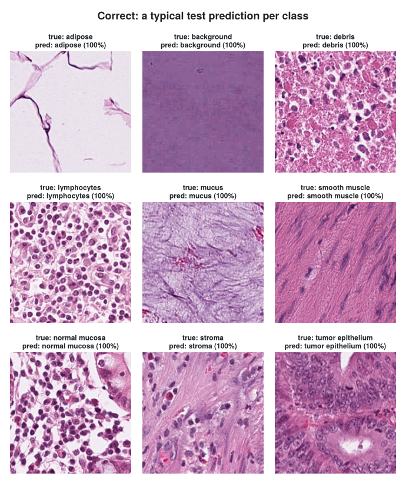
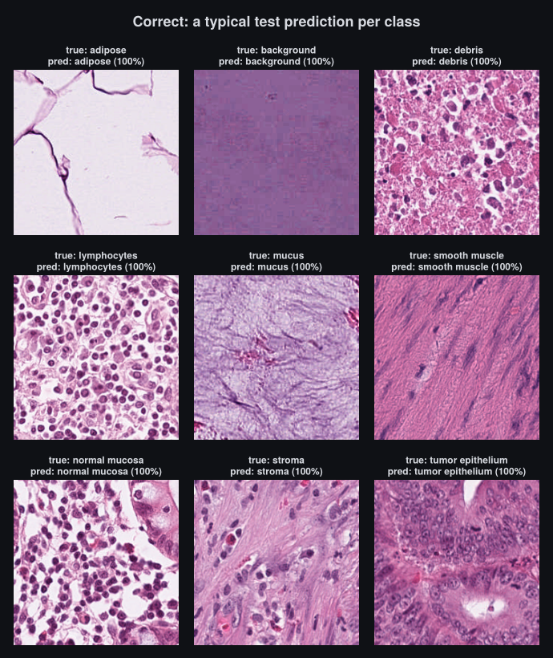
Per class, seven of the nine tissues are above 94% recall. Smooth muscle and stroma are the outliers, and they are mostly mistaken for each other. The model misclassifies 232 of the 7,180 test tiles. In the confusion matrix below, each row is a true class, and each cell is the share of that class’s tiles predicted as the column’s class. The buttons switch it to raw counts, or to shares of the predicted class.
Stroma and smooth muscle are both pink, fibrous tissue made of elongated, spindle-shaped cells, and the model is often confident when it confuses them. 51 of the 232 errors have a confidence above 99%, and all of the 12 most confident errors are stroma tiles predicted as smooth muscle. The four most confident are shown below beside correctly classified tiles of both classes, and they look more like the smooth muscle examples than the stroma ones:
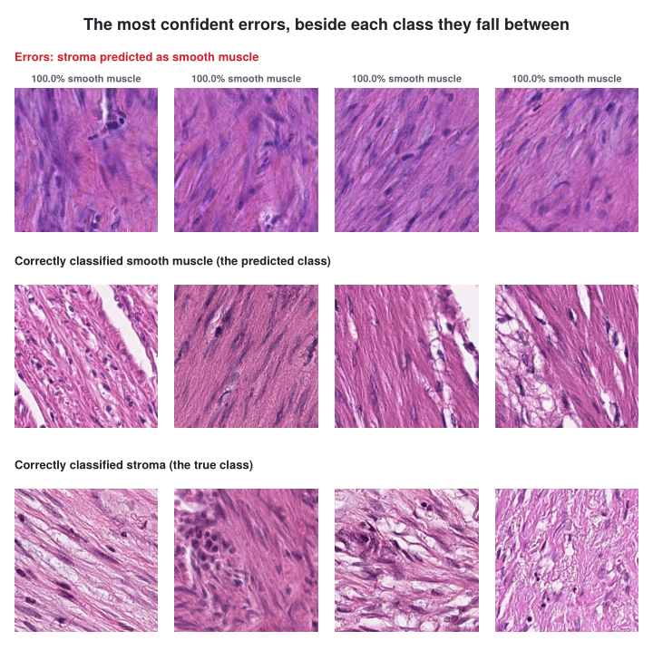
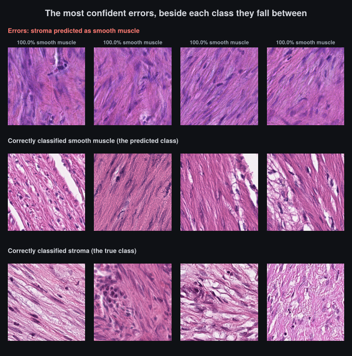
The calibration error is small overall, and the reliability diagram shows where it comes from. 6,785 of the 7,180 test tiles land in the top bin, where confidence and accuracy agree; in all but one of the bins below it the model is overconfident, but each holds at most about a hundred tiles (the count is on each bar).
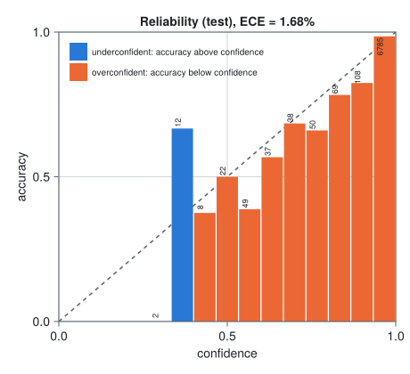
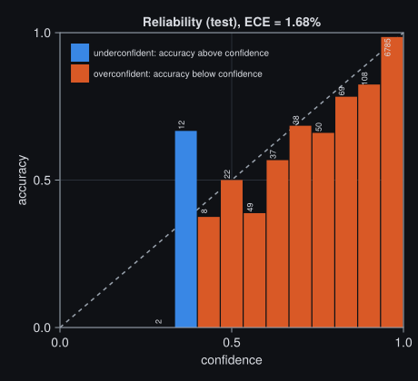
NoteAblations: what didn’t help
I tried a few things on top of this run, all on the same 5-epoch schedule unless noted, and none of them clearly beat it. Training the same configuration with different seeds moves test macro accuracy by about 0.6 points, so anything smaller than that is noise.
- A wavelet texture branch: five Haar levels of subband energies, concatenated to the pooled backbone features. On RGB it changed nothing (two seeds). On haematoxylin and eosin densities, after colour deconvolution, it was ahead on two seeds and behind on the third: +0.2 points on average.
- HSV colour jitter (hue ±0.05 of a turn, saturation ±30%, value ±20%): about 1.5 points worse on test, at 5 and at 10 epochs. It also needed gradient clipping; without it, training diverged during the warm-up.
- Label smoothing 0.1 on top of the jitter: no better, and much worse calibrated (ECE around 8%).
- 10 epochs, or a gentler backbone learning rate: both within noise.
The backbone may also be part of why the texture ideas added nothing. ConvNeXt V2 is pretrained as a fully convolutional masked autoencoder (FCMAE) before its ImageNet fine-tuning (Woo et al. 2023): it learns by reconstructing masked regions from their surroundings, which might make it particularly well suited to local features and textures already. SAM’s image encoder, the best end-to-end model in MedMNIST+, was also initialized from masked-autoencoder pretraining.
Given how close the published results above are to this model, I suspect we are near the limit of what this test set allows. The code for these runs is in the companion repo at commit 7684532, and each run’s settings and numbers are in blog/sweep_results.jsonl.
Exporting the model
Export turns the trained model into a bundle ReactantServer can load: StableHLO for each batch size, the weights, and a manifest describing the tensors on the wire. Two hooks define the inputs a client sends and the outputs it gets back. The model already converts UInt8 pixels to normalized Float32 inside its own program, so the wire tensor is the same img batch field forward reads, and of everything forward returns, only the logits ship; the kinetic energy and motion stay in training.
ReactantNitro.export_inputs(::PathMNIST) = [ExportSpec("img", UInt8, [224, 224, 3, 1])]
ReactantNitro.export_outputs(::PathMNIST) = [ExportSpec("logits")]The export itself is one call on the trained handle. ReactantServerExport is a separate package that loads ReactantNitro’s export extension, so a training environment that doesn’t export never has to load it. Export is a CPU trace and does not reuse the training compile cache; for both batch sizes it took about seven minutes.
using ReactantServerExport
export_model(nitro, ReactantServerBundle(); dir = "bundles", name = "pathmnist_node",
batch_sizes = [1, 16])bundles/pathmnist_node/
├── manifest.yaml 1.5 KB
├── model.b1.mlir 50 KB StableHLO, batch 1
├── model.b16.mlir 50 KB StableHLO, batch 16
└── weights.safetensors 107 MBThe manifest describes the tensors the server expects and returns, in Julia’s axis order with the batch axis last. It also carries provenance: the full experiment configuration, the ReactantNitro and Reactant versions, and the checkpoint the weights came from.
executable_inputs:
- name: "img"
dtype: "u8"
shape: "acdn"
dims: { a: 224, c: 224, d: 3 }
executable_outputs:
- name: "logits"
dtype: "f32"
shape: "an"
dims: { a: 9 }
batching:
compiled_batch_sizes: [1, 16]Serving with ReactantServer
ReactantServer serves every bundle in a model repository over the KServe V2 gRPC protocol. The image is pinned by digest, so the command runs exactly the server described here even after newer images are published. Mount the repository read-write, since the server stores each bundle’s compiled executables beside it so later starts skip compilation:
NotePrerequisites
podman, the NVIDIA Container Toolkit, and a CDI spec so podman can see the GPU. Rootless podman works.
sudo nvidia-ctk cdi generate --output=/etc/cdi/nvidia.yamlpodman run --rm --device nvidia.com/gpu=0 \
-v ./bundles:/var/lib/reactantserver/models:Z \
-p 8001:8001 -p 8002:8002 \
ghcr.io/enzymead/reactantserver@sha256:ba640d6a1b048ae9bc728a47ade971318d37fa8cfbcc6e2539e5d096b07cb0d5
curl -s localhost:8002/readyz # 200 once the model is compiled and servingCalling the server
The client only depends on ReactantServerClient, which doesn’t pull in Reactant or XLA, so it can run on a machine without a GPU. It reads the test split from the same memory-mapped .u8 files used for training.
For streaming a whole dataset, ReactantServerClient stages requests in a pool of buffers it allocates once and reuses, so sending the test set doesn’t allocate a new array per request or put pressure on the garbage collector. Several requests are in flight at once, and when the server is on the same host the client can send the data through shared memory instead.
NoteStreaming the test set through the staging pool
using ReactantServerClient, Mmap
const TILE = (3, 224, 224) # bytes on disk are (C, W, H, N)
function load_split(dir, split)
images = open(joinpath(dir, "$(split)_images.u8")) do io
Mmap.mmap(io, Array{UInt8, 4}, (TILE..., filesize(io) ÷ prod(TILE)))
end
labels = Int.(read(joinpath(dir, "$(split)_labels.u8"))) .+ 1 # 0-based on disk
return images, labels
end
struct TileIO <: AbstractInferenceIO
images::Array{UInt8, 4} # memory-mapped, (C, W, H, N)
logits::Matrix{Float32} # filled in as responses arrive
end
Base.length(io::TileIO) = size(io.images, 4)
ReactantServerClient.item_input_bytes(::TileIO) = prod(TILE)
function ReactantServerClient.infer_encode_chunk!(io::TileIO, r::UnitRange, slot::PoolSlot)
input = scratch(slot, "img", (224, 224, 3, length(r)), UInt8)
buf = pool_view(input)
for (k, i) in enumerate(r) # (C, W, H) on disk to the model's (W, H, C)
permutedims!(view(buf, :, :, :, k), view(io.images, :, :, :, i), (2, 3, 1))
end
return input
end
function ReactantServerClient.infer_decode_chunk!(io::TileIO, r::UnitRange, response)
io.logits[:, r] = InferOutput("logits", response, Float32)
return nothing
end
images, labels = load_split("data/pathmnist_224", "test")
logits = zeros(Float32, 9, length(labels))
kserve_init()
model = KServeModel("grpc://127.0.0.1:8001", "pathmnist_node"; max_batch_size = 16)
infer_async(model, TileIO(images, logits))
pred = [argmax(z) for z in eachcol(logits)]
count(pred .== labels) / length(labels)On the same RTX A6000, the full test set ran at about 1,030 tiles per second in batches of 16, and a single tile took 7.8 ms at the median (about 90 ms at the 99th percentile, consistently across runs). For comparison, a training step in the benchmark below takes 88.5 ms for 32 tiles, about 360 tiles per second. Serving is about 2.9 times faster than training, since it runs only the forward pass, without the backward pass or the optimizer update. The served model agrees with the in-process one:
In-process (evaluate) |
Served | |
|---|---|---|
| Accuracy | 96.77% | 96.77% |
| Macro accuracy | 95.93% | 95.93% |
| Predictions that differ | 0 of 7,180 | |
| Largest probability difference | 0.00044 |
The small probability differences come from the server compiling and autotuning its own kernels. And because ReactantServer speaks the standard KServe V2 protocol, the client does not have to be Julia: Triton’s tritonclient or any gRPC client that implements the spec works the same way.
Training speed against PyTorch
The switch started with a 10x speedup over PyTorch eager on a CNN into a NeuralODE. A year later, I ran the comparison again on this post’s model and on the NeuralODE by itself, against both PyTorch eager and torch.compile. It only covers these two workloads: enough to show that Reactant’s performance is good and that compile time is not a deal breaker.
The biggest surprise for me was torch.compile. Coming back to it after a year, it now works smoothly on these workloads. Much of the 10x I originally saw was against PyTorch eager, and a hand-written RK4 loop compiled with mode="reduce-overhead", which captures each step in CUDA graphs, closes most of that gap. I couldn’t get torchdiffeq itself to compile, even with its RK4 solver, so both stacks here use a hand-written RK4.
Both stacks use the same weights (timm’s ConvNeXt V2 Tiny and Luximm’s port of it), batch size 16 with 2 accumulation steps, 224×224 inputs and TF32, on one RTX A6000. “Step” is the steady-state time for one training step, and the last column is the first step, including compilation.
| Workload | Stack | Step | First step (compile included) |
|---|---|---|---|
| CNN to NeuralODE (this post’s model) | Julia, Reactant default | 88.5 ms | 318 s |
PyTorch max-autotune (fastest) |
100.3 ms | 1,420 s | |
PyTorch reduce-overhead |
107.2 ms | 147 s | |
| PyTorch eager | 391.6 ms | 6 s | |
| NeuralODE alone (MLP, RK4, 100 steps) | Julia, Reactant default | 10.8 ms | 99 s |
PyTorch reduce-overhead (fastest) |
16.1 ms | 6 s | |
| PyTorch eager | 127.1 ms | 0.4 s |
Reactant, through XLA, is ahead of torch.compile (Inductor) on both workloads: 1.13x faster than its fastest mode on the full CNN to NeuralODE model, and 1.5x on the NeuralODE alone. Against PyTorch eager the gap is 4.4x and 12x. Compilation takes a few minutes, and ReactantNitro keeps the compiled programs for as long as the Julia process runs, so later runs reuse them unless the graph changes. PyTorch’s fastest mode on the full model, max-autotune, compiled for 24 minutes. On the NeuralODE alone, though, torch.compile is much quicker than Reactant: 6 s against 99 s.
Working with agents
Day to day, I don’t write much code by hand anymore. Coding agents write most of it, while I review the results and make the decisions. Agents make many small edits and check each one, so the cost of starting Julia, loading packages and compiling for every check adds up quickly. Kaimon.jl, by Kahli Burke, is what makes this practical in Julia. It runs Julia sessions and exposes them to an agent over MCP, so the agent evaluates code, runs tests and searches the codebase in a warm session instead of starting a new Julia process for every command.
Revise.jl is what lets that session stay open. The agent’s edits are patched into the running session, and changes that don’t touch the compiled graph, such as the learning rate, schedules, augmentation, data loading or logging, take effect with no restart and no recompile. A run already in progress keeps running the code it started with, so edits take effect from the next run.
ReactantNitro and ReactantServer both build on this. Each has a package extension that loads when KaimonGate, the part of Kaimon that runs inside the Julia session, is present, and registers MCP tools for its own work. ReactantNitro’s tools set up an experiment; start, monitor and stop training; and validate, evaluate, predict and export (nitro_setup, nitro_train, nitro_status, nitro_stop, nitro_validate, nitro_evaluate, nitro_predict, nitro_export). ReactantServer’s tools start and stop a server, report its status and list the models it serves (rserver_start, rserver_status, rserver_models, rserver_stop). An agent can train a model, export it and serve it from the same session it uses to edit the code. Training runs in the background and the tool returns a run ID straight away, so the agent checks on the run instead of waiting for it.
Any Julia package can give agents tools the same way. It declares KaimonGate as a weak dependency and adds a package extension, and Julia compiles and loads that extension automatically whenever KaimonGate is loaded in the same session, and never otherwise, so the package itself takes on no new dependency. Inside the extension, a tool is an ordinary Julia function: KaimonGate reads its arguments and keyword arguments to build the MCP schema, and uses its docstring as the tool’s description.
Note
ext/MyPackageKaimonGateExt.jl: one tool
module MyPackageKaimonGateExt
using MyPackage, KaimonGate
"""
mypackage_status(; verbose = false) -> String
Report what MyPackage is doing in this session.
"""
mypackage_status(; verbose::Bool = false) = MyPackage.status_report(; verbose)
# Register with the session's running gate; tools merge by name with other packages' tools.
register() = KaimonGate.serve(tools = [KaimonGate.GateTool("mypackage_status", mypackage_status)])
endThe model in this post was built this way. An agent ran the training runs, the hyperparameter sweep behind the ablations, and the scripts that produce the figures, through Kaimon.
What’s next
I want to keep writing one language and use it to target many compilers and accelerators. Reactant compiles ordinary Julia to StableHLO, which XLA optimizes for CPU, GPU or TPU and Enzyme-JAX differentiates. I’m also looking forward to the seemingly never-ending stream of optimization work on Enzyme-JAX, and to seeing the Reactant.jl ecosystem mature.
I’d also like to see the SciML ecosystem follow, so that the existing OrdinaryDiffEq and SciMLSensitivity packages can be called inside a Reactant-compiled program, the way Diffrax works inside JAX. That would bring their adaptive and stiff solvers and choice of adjoint methods into compiled programs, instead of the hand-written RK4 I use today. It isn’t here yet, but work is moving toward it. A draft pull request makes OrdinaryDiffEq’s solve trace under Reactant’s @compile for explicit solvers, with the remaining pieces, such as saveat, callbacks and implicit solvers, tracked in an issue. SciMLSensitivity can already compile the vector-Jacobian products inside its adjoints with ReactantVJP.
Wrapping up
A year ago I started using Julia to speed up a CPU-bound service. Today I train, export and serve models with it, and the bet solved each of the problems that pushed me away from PyTorch. Every PyTorch model we had converted to StableHLO, including object detection models, several BERT models and many other computer vision models. ReactantServer serves them directly, with any pre and post processing written in plain Julia. We have been testing it for months, and it is part of an upcoming regulated release.
On the workloads I measured, Reactant trains faster than torch.compile, and when I write a custom layer, I no longer need a hand-written backward pass to get acceptable performance. I haven’t trained a PyTorch model in half a year. The walkthrough in this post covers the whole path on a real dataset: a ConvNeXt V2 backbone with a NeuralODE head, trained with ReactantNitro to results in line with published models on the same test set, exported to StableHLO, and served by ReactantServer with the same predictions it makes in process.
Getting here took more than Reactant. I spent a significant amount of time getting the gRPC client and server packages stable enough for production use, ported timm’s backbones to Lux, and built my own ML framework and serving platform. The day-to-day workflow has made that effort worth it. Agents train, export and serve models through MCP, and they do well with a REPL and Revise driven workflow, where each small edit can be checked in a session that is already running.
Using Julia hasn’t impeded my work, and I’m more excited about the language’s future than ever. If you want to try it, the companion repo reproduces this walkthrough, and ReactantNitro’s pitfalls page covers what I learned the hard way. ReactantNitro.jl and ReactantServer.jl are open for issues and pull requests.
Acknowledgements
Thanks to:
- All of the Reactant, Enzyme and Enzyme-JAX contributors, for the foundation this work sits on, and for putting up with me as I continue to learn Reactant’s internals through trial and error
- William Moses, for welcoming my projects into EnzymeAD
- Kahli Burke, research scientist in the Plasma Theory and Computation group of the Nuclear Engineering and Engineering Physics Department at UW Madison, for making it easy to bring the full ML lifecycle into agentic workflows through Kaimon.jl
- Avik Pal, for Lux.jl
- The FluxML organization, for so many essential packages, such as Optimisers.jl, ParameterSchedulers.jl and Functors.jl
- Medical Metrics Inc., for funding the development of these projects and allowing them to be open sourced
References
Bengio, Samy, Oriol Vinyals, Navdeep Jaitly, and Noam Shazeer. 2015. “Scheduled Sampling for Sequence Prediction with Recurrent Neural Networks.” Advances in Neural Information Processing Systems 28 (NeurIPS 2015), 1171–79. https://arxiv.org/abs/1506.03099.
Bezanson, Jeff, Alan Edelman, Stefan Karpinski, and Viral B. Shah. 2017. “Julia: A Fresh Approach to Numerical Computing.” SIAM Review 59 (1): 65–98. https://doi.org/10.1137/141000671.
Chen, Ricky T. Q., Yulia Rubanova, Jesse Bettencourt, and David Duvenaud. 2018. “Neural Ordinary Differential Equations.” Advances in Neural Information Processing Systems 31. https://arxiv.org/abs/1806.07366.
Doerrich, Sebastian, Francesco Di Salvo, Julius Brockmann, and Christian Ledig. 2025. “Rethinking Model Prototyping Through the MedMNIST+ Dataset Collection.” Scientific Reports 15 (1). https://doi.org/10.1038/s41598-025-92156-9.
Dupont, Emilien, Arnaud Doucet, and Yee Whye Teh. 2019. “Augmented Neural ODEs.” Advances in Neural Information Processing Systems 32. https://arxiv.org/abs/1904.01681.
Finlay, Chris, Jörn-Henrik Jacobsen, Levon Nurbekyan, and Adam M. Oberman. 2020. “How to Train Your Neural ODE: The World of Jacobian and Kinetic Regularization.” Proceedings of the 37th International Conference on Machine Learning, Proceedings of machine learning research, vol. 119. https://arxiv.org/abs/2002.02798.
Ignatov, Andrey, and Grigory Malivenko. 2024. NCT-CRC-HE: Not All Histopathological Datasets Are Equally Useful. https://arxiv.org/abs/2409.11546.
Kather, Jakob Nikolas, Johannes Krisam, Pornpimol Charoentong, et al. 2019. “Predicting Survival from Colorectal Cancer Histology Slides Using Deep Learning: A Retrospective Multicenter Study.” PLOS Medicine 16 (1): e1002730. https://doi.org/10.1371/journal.pmed.1002730.
Lei, Wenhui, Yusheng Tan, Anqi Li, et al. 2025. Unifying Multiple Foundation Models for Advanced Computational Pathology. https://arxiv.org/abs/2503.00736.
Moses, William S., Valentin Churavy, Ludger Paehler, et al. 2021. “Reverse-Mode Automatic Differentiation and Optimization of GPU Kernels via Enzyme.” Proceedings of the International Conference for High Performance Computing, Networking, Storage and Analysis, SC ’21, 1–16. https://doi.org/10.1145/3458817.3476165.
Moses, William, and Valentin Churavy. 2020. “Instead of Rewriting Foreign Code for Machine Learning, Automatically Synthesize Fast Gradients.” In Advances in Neural Information Processing Systems, edited by H. Larochelle, M. Ranzato, R. Hadsell, M. F. Balcan, and H. Lin, vol. 33. Curran Associates, Inc. https://proceedings.neurips.cc/paper/2020/file/9332c513ef44b682e9347822c2e457ac-Paper.pdf.
Pal, Avik. 2023. Lux: Explicit Parameterization of Deep Neural Networks in Julia. Zenodo. https://doi.org/10.5281/zenodo.7808903.
Smith, Leslie N., and Nicholay Topin. 2019. “Super-Convergence: Very Fast Training of Neural Networks Using Large Learning Rates.” Artificial Intelligence and Machine Learning for Multi-Domain Operations Applications, Proceedings of SPIE, vol. 11006: 1100612. https://doi.org/10.1117/12.2520589.
Woo, Sanghyun, Shoubhik Debnath, Ronghang Hu, et al. 2023. “ConvNeXt V2: Co-Designing and Scaling ConvNets with Masked Autoencoders.” 2023 IEEE/CVF Conference on Computer Vision and Pattern Recognition (CVPR), 16133–42. https://doi.org/10.1109/CVPR52729.2023.01548.
Yang, Jiancheng, Rui Shi, Donglai Wei, et al. 2023. “MedMNIST v2: A Large-Scale Lightweight Benchmark for 2D and 3D Biomedical Image Classification.” Scientific Data 10 (1). https://doi.org/10.1038/s41597-022-01721-8.